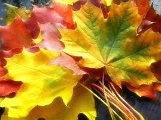
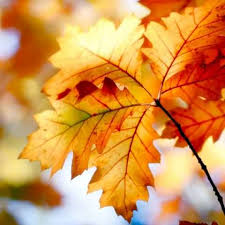

Жёлтый — цветa электромагнитного излучения с длинами волн от 550 до 590 нм. Является дополнительным цветом к синему в RGB или дополнительным к фиолетовому в художественной практике и системе RYB. Однако в древности, из-за несовершенства имевшихся пигментов, его рассматривали как дополнительный к пурпурному.
- Желтый цвет дает ощущение радости, веселья, заряжает оптимизмом. Люди, живущие в теплом климате, в странах, где много солнца, чаще улыбаются.
- «Желтая пресса» получила свое название от комикса «Желтый ребенок», выходившего в 1894-1998 гг. в американских газетах «New-York World” и “New-York Journal American”. Эти издания славились своей скандальной хроникой и низкопробными статьями. Так, сплетни, слухи, скандалы стали своего его «желтыми провокаторами» для формирования общественного мнения.
- Стены домов для психбольниц недаром красят в желтый цвет (отсюда идет название «желтый дом»), этот цвет приносит облегчение при некоторых формах душевных заболеваний.
- Считается, что мягкий желтый свет хорошо влияет на зрение. Так для глаз полезно смотреть на заходящее солнце и огонь.
Я обожаю желтые тюльпаны, но почему-то все думают, что желтые цветы нельзя дарить мол к разлуке. На самом деле это бред. Сегодня поговорим про желтый цвет во всех сферах нашей жизни.